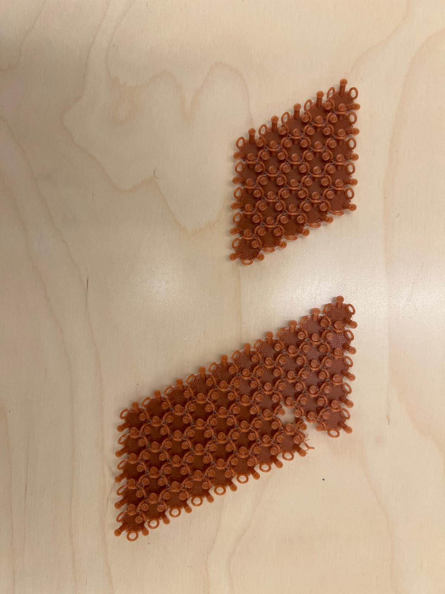

Week 4: 3D Design & Printing
Photogrammetry
After watching several tutorials on Meshroom, I noticed that the software wasn't compatible with Mac iOS. My friend suggested using polycam, a popular 3D capture app for iPhone. I started with this because I'm always curious about products that make seemingly complex technologies more readily accessible to the layperson. The ability to 3D-scan objects from your phone, and then clean and print those objects for artistic or industrial uses, feels like it could open up a lot of creative opportunities for people working or learning across sectors.
Scanning My Shoes
I chose to scan my chunky New Balance sneakers because I felt that these would be difficult to model in Fusion360. They have multiple colors, textures, and shapes along the body and upper of each shoe. However, I know that shoe design is a common use case for 3D modeling and printing, so I'd be interested to explore this area in more detail this week. The polycam app has 2 options: "LiDAR" and "PHOTO" - their FAQ explains that the LiDAR setting is better for scanning a large space, like a room or apartment, and PHOTO is better for smaller, discrete objects. I decided to try both for this exercise to better understand their strengths and limitations.

LiDAR vs. Photo Results
The LiDAR workflow had me take a video surrounding the shoes and took maybe 30 seconds to 1 minute to process. The results were obviously less refined, with less detail around the base of the shoe. The PHOTO workflow had me take multiple photos from different angles, which took several minutes to process. However, this reproduction was much cleaner than the LiDAR one, which validates polycam's suggestion from the start. I found it interesting that the methods processed different radii from the shoes themselves (as the videos show below), and I wonder whether this has to do with the LiDAR method being better suited to spatial environments.
PHOTO RESULT AND LiDAR (RIGHT) RESULTS ZOOMED IN.

LiDAR METHOD IN 3D.

PHOTO METHOD IN 3D.
Printing the Shoes
I wanted to try to complete the workflow by cleaning the scan and 3D-printing it. Although I exported the file from polycam as an STL, it looked hollow when I explored it in Fusion360. Not quite knowing how to fill it out, I just decided to add a platform and see what happened.
Designing & Printing PLA Chainmail
Even before we visited Ted's lab space at SEC, I was curious about a way to 3D print a flexible form (this seems to be an ongoing trend from my living hinge exercise). When he showed us the 3D-printed swatch, I decided I'd give it a go myself. I found a Youtube tutorial for designing chainmail in Fusion360, which I'll link here. The tutorial was pretty straightforward, and it taught me several new tools and commands for the program. I think I want to do some sort of kinetic sculpture for my final project that includes this texture, so I imagined that this would be a fruitful, exploratory design process.
YouTube Reference 🚀First Test
Following the tutorial, I decided to print a test with fewer components to make sure everything was working correctly. I also bumped up the unit size so it was easier to see. This test printed well and had movement, until one of the pieces fell out of the chain. I hypothesized that the flat knob size might be slightly too small, so I returned to my model and changed that dimension from 3.3 mm to 3.5 mm.
Second Test
After changing the knob size, I multiplied the pattern to see if the swatch might have better strength and flexibility with more structure. The resulting swatch felt slightly more constricted, likely because there were more parts involved. I also thought bumping the diameter by 0.2 mm might have caused more friction between the knob/rod attachment and the hoop attachment.


Final Version
For my final version, I decided to bring the knob diameter back down to 3.35 mm. This time, I also tried printing a 5x10 pattern instead, which creates a parallelogram swatch rather than a diamond swatch. This version was also stiff at the beginning (plus I lost 2 pieces during the printing process). However, I played around with it a little bit and the jointed loosened up, leading me to believe that the heating/printing process created some extra stickiness.

Some Glamour Shots
Files for View/Download
3D Model File 🚀 STL File 🚀 GCode File 🚀
Final Project Update
Please refer to the "Week 1" page for this week's progress!
Final Project 🚀